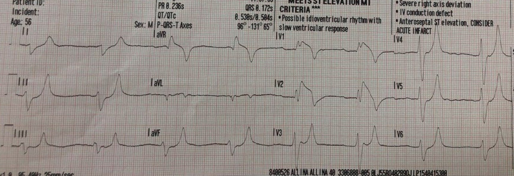
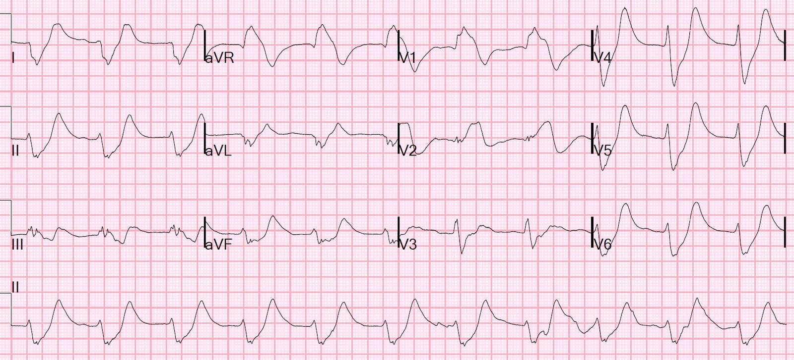
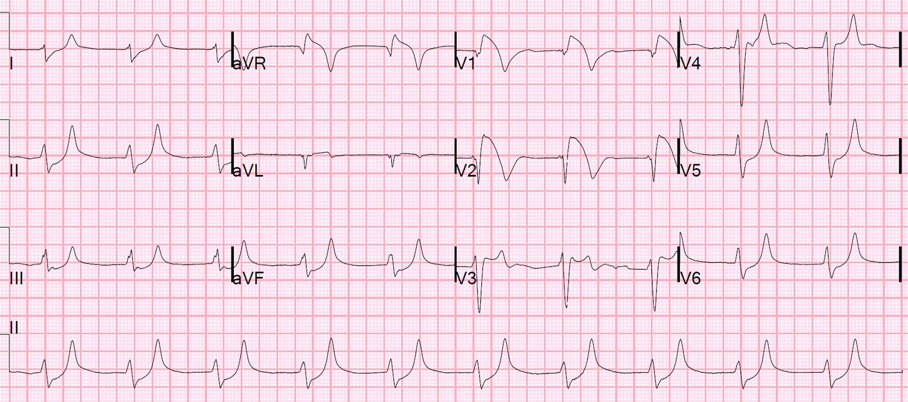
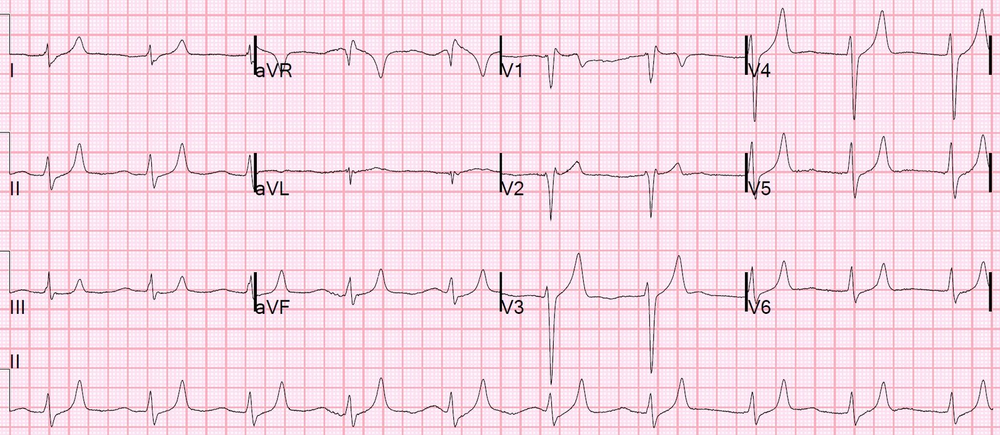
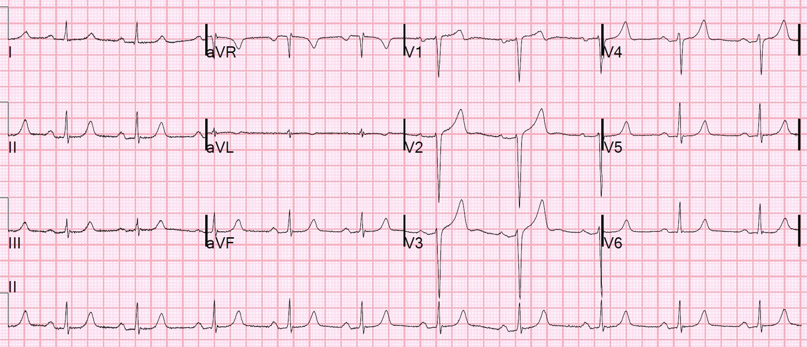
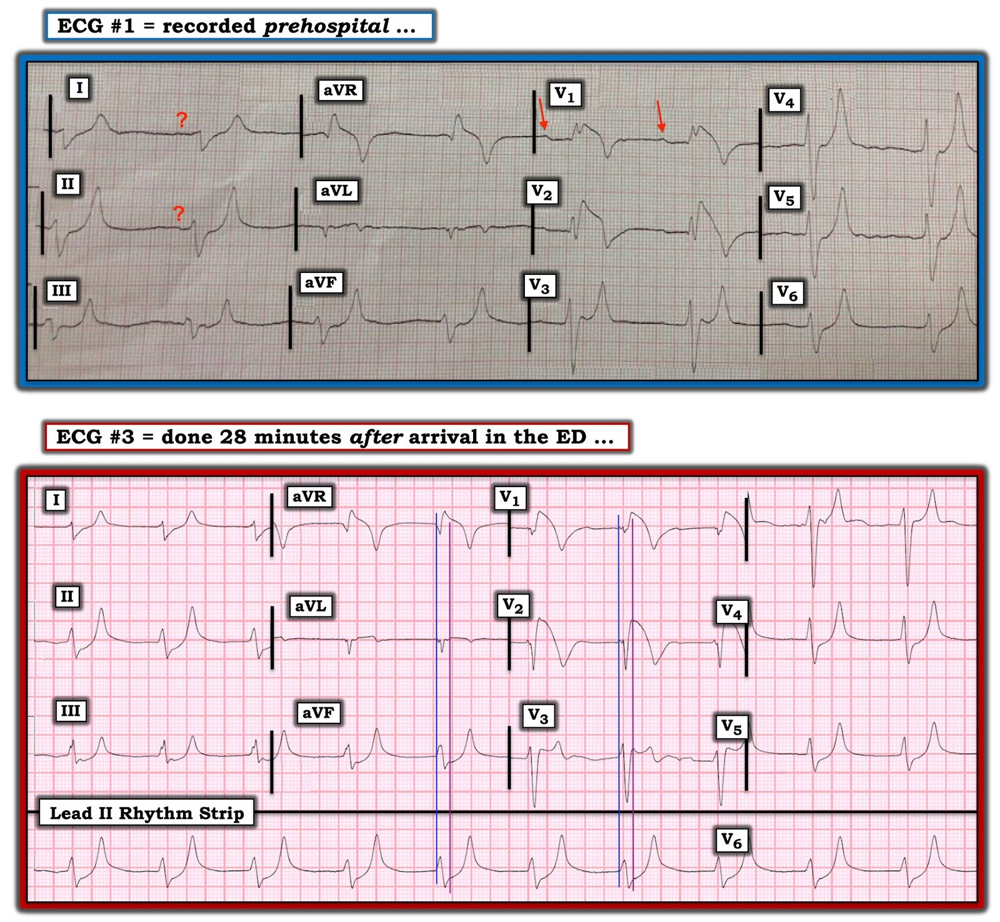
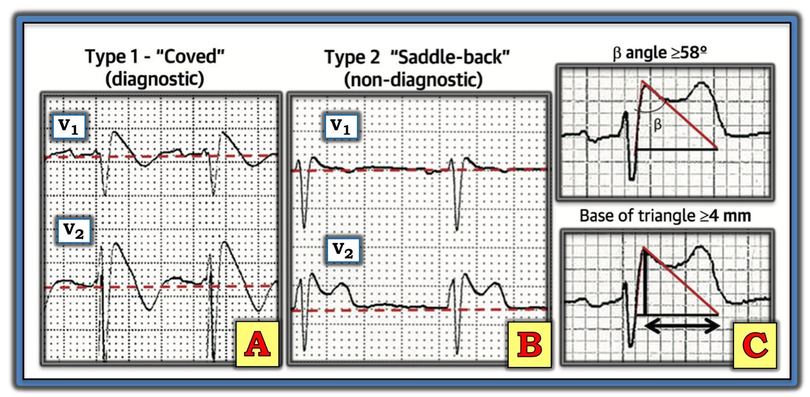

05/09/2020 — Bệnh nhân đau ngực và ST chênh lên ở V1 và V2
Bản dịch tiếng Việt của bài "A patient with chest pain and ST Elevation in V1 and V2" – Dr. Smith’s ECG Blog. Giữ nguyên toàn bộ 9 hình ảnh của bản gốc.
Một bệnh nhân nam 56 tuổi than đau ngực và gọi 911.
Đội cấp cứu đã ghi một điện tâm đồ trước viện:


Nhân viên cấp cứu ngoài viện đã kích hoạt phòng thông tim (cath lab) ngay từ trước viện.
Đây là một điện tâm đồ đặc hiệu chẩn đoán (pathognomonic).
Đó là gì?
Đây là tăng kali máu, mức độ nặng. Đáng ngạc nhiên là dường như vẫn có sóng P, vốn thường bị mất đi khi K cao đến mức này.
Tăng kali máu nặng thường biểu hiện bằng ST chênh lên (STE) ở V1 và V2, thường với hình thái giống Brugada (R cao ở V1, hoặc rSR’; đoạn ST dốc xuống; sóng T âm. QRS rất rộng và sóng T rất nhọn. Đặc biệt ở V4 và V5, sóng T nhọn do đáy hẹp, là hệ quả của một đoạn ST dài và phẳng (xem đặc biệt chuyển đạo III).
Khi đến viện, tình trạng tăng kali máu (hyperK) được nhận ra và việc kích hoạt phòng thông tim bị hủy. Bệnh nhân là người đang chạy thận nhân tạo, đã bỏ lỡ buổi lọc máu ngày hôm trước.
Một điện tâm đồ lúc đến viện được ghi khi bắt đầu điều trị:


Gần như là một sóng hình sin. Không có sóng P rõ ràng, nhưng điều đó không có nghĩa là nút xoang không phát nhịp. Nút xoang vẫn có thể phát nhịp và dẫn truyền, nhưng không có hoạt động nhĩ nào để tạo ra sóng P. Như Ken trình bày bên dưới, đây được gọi là nhịp xoang-thất (sinoventricular rhythm)
Xem tại đây các ví dụ về sóng hình sin.
Một điện tâm đồ khác được ghi 28 phút sau, sau khi điều trị bằng calci, glucose và insulin, cùng 20 mg albuterol khí dung.
Kết quả K trả về là 9,3 mEq/L


Điện tâm đồ này được ghi ở phút thứ 60, sau khi điều trị thêm:


Điện tâm đồ này được ghi ở thời điểm 2 giờ:



===================================
BÌNH LUẬN CỦA TÔI, bởi KEN GRAUER, MD (5/9/2020):
===================================
Như Dr. Smith đã nêu — ca hôm nay trình bày một loạt điện tâm đồ đặc hiệu chẩn đoán, có ý nghĩa cứu sống tiềm tàng nếu được nhận ra kịp thời.
- Dr. Smith điểm lại các đặc điểm chẩn đoán then chốt từ 5 bản ghi liên tiếp được trình bày và bàn luận ở trên. Tôi giới hạn bình luận của mình ở một số điểm bổ sung liên quan đến điện tâm đồ thứ 1 và thứ 3 đã được trình bày — mà để cho rõ, tôi đã ghép lại trong Hình 1.


Chúng tôi đã trình bày rất nhiều ca tăng kali máu trên Dr. Smith’s ECG Blog. Ca hôm nay giàu thông tin nhờ tính chất liên tiếp của các dấu hiệu khi chúng tiến triển từ nồng độ K+ huyết thanh ban đầu = 9,3 mEq/L — cho đến khi điều trị đưa nồng độ K+ huyết thanh trở về gần khoảng bình thường.
- Tôi minh họa trình tự “kinh điển” của các dấu hiệu điện tâm đồ trong tăng kali máu ở phần Bình luận của tôi cuối bài ngày 26 tháng Một năm 2020 trên Dr. Smith’s ECG Blog. Nhiều dấu hiệu trong số này được thấy trên các điện tâm đồ của ca hôm nay.
SUY NGHĨ CỦA TÔI về điện tâm đồ #1: Như Dr. Smith đã nêu — bản ghi trước viện ban đầu của người đàn ông 56 tuổi trong ca hôm nay ( = điện tâm đồ #1) — là đặc hiệu chẩn đoán cho tăng kali máu.
- Phức bộ QRS giãn rộng rõ rệt.
- Có nhịp chậm rõ rệt (tần số 40 mấy lần/phút).
- Sóng P dường như có mặt ở một số chỗ (mũi tên ĐỎ ở chuyển đạo V1) — nhưng biên độ sóng P giảm rõ rệt.
- Có các rối loạn dẫn truyền. Dựa vào các sóng P mà chúng ta thấy đối với 2 phức bộ QRS ở chuyển đạo V1 (mũi tên ĐỎ) — khoảng PR dường như hằng định, và kéo dài rõ rệt (blốc AV độ 1).
- Sự hiện diện của sóng P ở những chỗ khác thì kém chắc chắn hơn. Nghĩa là — tôi kém chắc chắn hơn rằng các dấu hỏi ở chuyển đạo I và II đại diện cho hoạt động nhĩ. Khi tăng kali máu tiến triển — biên độ sóng P giảm dần cho đến khi cuối cùng sóng P biến mất. Điều thú vị là nút xoang thường vẫn có thể truyền xung điện xuống tâm thất, mặc dù có thể không thấy sóng P nào trên điện tâm đồ. Đây được gọi là nhịp xoang-thất (sinoventricular) — nhịp này, nếu không xuất hiện từng lúc trên điện tâm đồ #1, thì có được thấy về sau trong ca này.
- Hình thái sóng T trên điện tâm đồ #1 rất có giá trị gợi ý. Như tôi minh họa trong bài ngày 26 tháng Một năm 2020 — các sóng T này giống tháp Eiffel (tức là, không chỉ sóng T ở nhiều chuyển đạo của điện tâm đồ #1 cao, nhọn và sắc đỉnh — mà các sóng T này còn đối xứng với góc đi lên và đi xuống bằng nhau — với đáy sóng T rất hẹp). Điểm MẤU CHỐT: Các sóng T này ở chuyển đạo II, III, aVF; và V3 đến V6 của điện tâm đồ #1 quá mảnh, quá đối xứng, và có đáy quá hẹp để có thể là một biến thể tái cực hoặc sóng T de Winter.
- Cuối cùng — hình ảnh điện tâm đồ Brugada típ 1 được thấy ở chuyển đạo V1 và V2 của điện tâm đồ #1. Gần như chắc chắn đây là kiểu hình sao chép Brugada (Brugada Phenocopy). Như Dr. Smith đã nêu — thường gặp kiểu hình sao chép Brugada đi kèm tăng kali máu nặng.
Về hội chứng BRUGADA so với kiểu hình sao chép Brugada: Chúng tôi đã trình bày nhiều ca có hình ảnh điện tâm đồ Brugada trên Dr. Smith’s ECG Blog. Để có một bài tổng quan cập nhật (State-of-the-Art Review) xuất sắc về hội chứng Brugada — Mời XEM bài viết này của Brugada và cs. trên JACC — Tập 72; Số 9; 2018.
- Hình ảnh điện tâm đồ Brugada típ 1 được chẩn đoán khi thấy ST chênh lên ≥2 mm ở một hoặc nhiều chuyển đạo trước tim phải (tức là, V1, V2, V3) — theo sau là sóng r’ và đoạn ST dạng vòm (coved) hoặc thẳng — trong đó đoạn ST cắt qua đường đẳng điện và kết thúc bằng một sóng T âm (Xem Ô A trong Hình 2).
- Hình ảnh Brugada típ 1 có thể được quan sát thấy một cách tự phát (với chuyển đạo V1 và/hoặc V2 đặt ở vị trí bình thường — hoặc đặt cao hơn thường lệ 1 hoặc 2 khoang liên sườn) — hoặc — hình ảnh Brugada típ 1 có thể được quan sát thấy khi làm nghiệm pháp kích thích bằng thuốc sau khi tiêm tĩnh mạch một thuốc chẹn kênh natri như ajmaline, flecainide hoặc procainamide.
- LƯU Ý #1: Trước đây, chẩn đoán hội chứng Brugada đòi hỏi không chỉ sự hiện diện của hình ảnh điện tâm đồ Brugada típ 1 — mà còn cả tiền sử đột tử, VT bền bỉ, ngất không do phản xạ phế vị hoặc tiền sử gia đình có người đột tử ở tuổi trẻ. Định nghĩa này đã được thay đổi sau một hội đồng đồng thuận chuyên gia năm 2013 — vì vậy hiện nay, tất cả những gì cần để chẩn đoán hội chứng Brugada là một hình ảnh điện tâm đồ Brugada típ 1 tự phát hoặc được gây ra, không cần thêm tiêu chuẩn nào khác.
- Ô B trong Hình 2 minh họa hình ảnh điện tâm đồ Brugada típ 2 hay “hình yên ngựa” (Saddle-back) . Hình ảnh này có thể gợi ý — nhưng không giúp chẩn đoán hội chứng Brugada (Xem Hình 2).
- LƯU Ý #2: Một số tình trạng khác ngoài hội chứng Brugada có thể tạm thời tạo ra hình ảnh điện tâm đồ Brugada típ 1. Chúng bao gồm (cùng nhiều tình trạng khác) — bệnh lý cấp tính có sốt — các thay đổi trương lực thần kinh tự chủ — hạ thân nhiệt — thiếu máu cục bộ/nhồi máu/ngừng tim — và tăng kali máu. Bệnh nhân mắc những tình trạng như vậy, có thể bắt chước thoáng qua các dấu hiệu điện tâm đồ của hình ảnh Brugada típ 1, được gọi là có kiểu hình sao chép Brugada (Brugada Phenocopy). Tầm quan trọng của việc nhận biết hiện tượng kiểu hình sao chép Brugada này là — việc điều chỉnh tình trạng nền (tức là, tăng kali máu trong ca hôm nay) có thể làm hình ảnh điện tâm đồ Brugada típ 1 biến mất, với tiên lượng tốt hơn nhiều so với bệnh nhân mắc hội chứng Brugada thực sự. Lưu ý rằng trên điện tâm đồ cuối cùng (thứ 5) được trình bày ở trên trong ca hôm nay — không còn bất kỳ dấu vết nào của hình ảnh Brugada típ 1 hay típ 2.


Hình 2: Ôn tập các hình ảnh điện tâm đồ trong hội chứng Brugada (phỏng theo bài báo của Brugada và cs. đã trích dẫn ở trên, đăng trên JACC: Tập 72; Số 9; 2018) — (A) Hình ảnh điện tâm đồ Brugada típ 1, cho thấy ST chênh lên dạng vòm (coved) ≥2 mm ở ≥1 chuyển đạo trước tim phải, theo sau là sóng T âm. (B) Hình ảnh điện tâm đồ Brugada típ 2 (hình ảnh “yên ngựa” (Saddle-back)) — cho thấy ST chênh lên dạng lõm (concave-up) ≥0,5 mm (thường ≥2 mm) ở ≥1 chuyển đạo trước tim phải, theo sau là sóng T dương. (C) Các tiêu chuẩn bổ sung để chẩn đoán hình ảnh điện tâm đồ Brugada típ 2 (TRÊN: đó là góc ß; DƯỚI: Có hình ảnh Brugada típ 2 nếu, tính từ điểm cao nhất của sóng r’ xuống 5 mm — đáy của tam giác tạo thành ≥4).
Quay lại với Hình 1: Tôi sẽ kết thúc phần bình luận bằng việc xem xét điện tâm đồ #3 — được ghi 28 phút sau khi bệnh nhân hôm nay đến khoa cấp cứu (ED) (sau khi điều trị bằng calci; glucose + insulin; và albuterol khí dung).
- Mặc dù vẫn còn rộng — phức bộ QRS trên điện tâm đồ #3 không còn rộng như trên điện tâm đồ #1.
- Tần số nhanh hơn một chút (tức là, ~60/phút) — nhưng tôi không còn thấy bất kỳ dấu hiệu nào của sóng P. Có lẽ — lúc này đây là nhịp xoang-thất (sinoventricular).
- Sóng T vẫn cao, nhọn và sắc đỉnh — mặc dù không còn cao bằng trên điện tâm đồ #1.
- LƯU Ý #3: Chúng ta bắt đầu thấy ST chênh xuống trên điện tâm đồ #3 — đặc biệt ở các chuyển đạo thành dưới và trước tim bên. Điều này rõ ràng nổi bật hơn so với trên điện tâm đồ #1. Điều quan trọng cần nhận thức là tác động của tăng kali máu nặng lên điện tâm đồ có thể che lấp các bất thường ST-T nền khác. Chỉ trên điện tâm đồ ghi lại, sau khi K+ huyết thanh trở về bình thường, chúng ta mới có thể đánh giá chính xác sự có mặt hay vắng mặt của các thay đổi ST-T cấp.
- LƯU Ý #4: Tôi thấy thú vị là một số chuyển đạo trên điện tâm đồ #3 (đặc biệt là chuyển đạo aVL, V2) — trông hẹp hơn nhiều so với thực tế. Điều này nhấn mạnh tầm quan trọng của việc sử dụng cả 12 chuyển đạo để đánh giá thời gian QRS. Tôi đã thêm 2 cặp đường thẳng đứng vào điện tâm đồ #3 — trong đó đường thẳng đứng màu XANH LAM đánh dấu điểm khởi đầu của phức bộ QRS (như thấy trên dải nhịp dài chuyển đạo II) — và đường thẳng đứng màu TÍM đánh dấu điểm kết thúc QRS. Lý do phức bộ QRS ở một số chuyển đạo trông hẹp một cách đánh lừa — là vì một phần QRS ở các chuyển đạo đó nằm trên đường nền.
- LƯU Ý #5: Như Dr. Smith đã nêu — hình ảnh điện tâm đồ Brugada típ 1 vẫn tồn tại ở chuyển đạo V1 và V2 trên điện tâm đồ #3. Ngoài ra — giờ đây chúng ta cũng thấy hình ảnh điện tâm đồ Brugada típ 2 (hình yên ngựa) ở chuyển đạo V3! Dù vậy — việc điện tâm đồ cuối cùng (thứ 5) ghi trong ca này không còn chút dấu vết nào của bất kỳ hình ảnh kiểu Brugada nào về cơ bản xác nhận rằng chúng ta đã thấy kiểu hình sao chép Brugada liên quan đến tăng kali máu nặng trên các bản ghi trước đó.